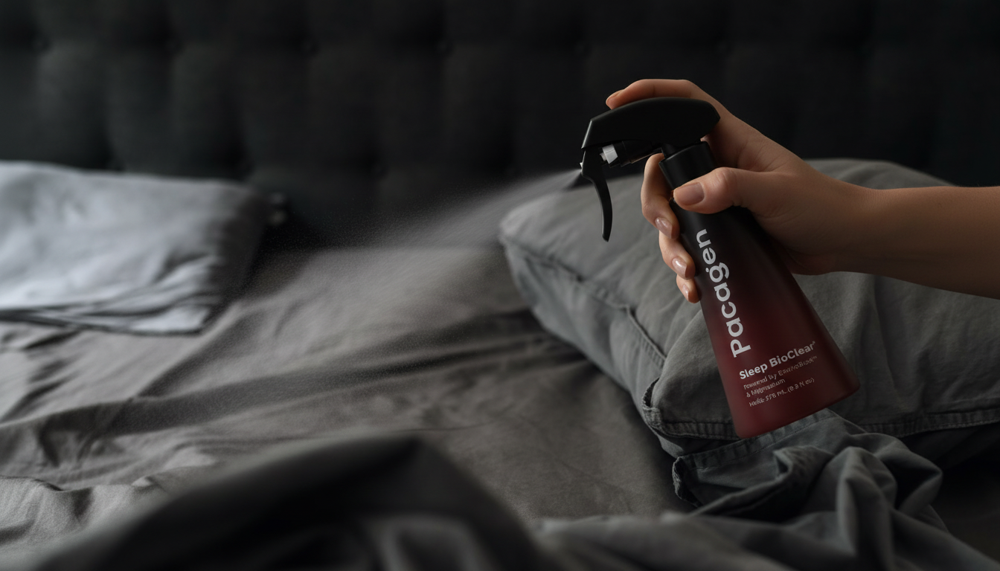

Small routines before bed can make a real difference in how well you sleep. You don't need a long or complicated ritual—just a few consistent habits that signal to your body and mind that it's time to rest. Here are five simple routines that help you sleep well.
Set a clear cutoff time
Pick a time when your wind-down officially begins, ideally about an hour before bed. Stop work, homework, and stressful conversations at that point. Think of it as closing the door on the day so your brain can shift out of problem-solving mode. When that line is clear, sleep has room to show up.

Dim the lights
Bright light tells your brain it's still daytime. Lowering the lights helps your body produce melatonin and get ready for sleep. Use lamps instead of overhead lights when you can—soft, warm lighting makes a bigger difference than most people expect, and it turns the room into a place that feels like rest.
Put screens away earlier
Phones, laptops, and TVs keep your mind alert. Aim to put screens away at least thirty minutes before bed—or start with fifteen and build from there. Swap scrolling for something calmer: reading, light stretching, or gentle music. Your eyes and your nervous system will thank you.

Use a magnesium sleep spray
Adding a sleep spray to your routine can help your body and your bedroom work in your favor. Sleep BioClear⁺ from Pacagen is a lavender and magnesium spray you use around your pillow or on your skin before bed—developed to support falling asleep faster, staying asleep, and waking refreshed, without melatonin. It also helps neutralize dust allergens in your sleep space so the air feels lighter. Same time each night, a few sprays as part of your wind-down: simple, repeatable, and built to fit into the rest of your routine.

Keep your bedroom for sleep
Let your bed be a cue for rest, not work or entertainment. Avoid working or watching intense shows in bed. When your brain links the bed with sleep, it becomes easier to fall asleep once you lie down. Reserve the room for calm, and sleep will start to feel like the default.
These five small routines aren't about being perfect. They're about sending gentle, consistent signals that the day is ending. Over time, they can help you fall asleep faster and wake up feeling more refreshed.